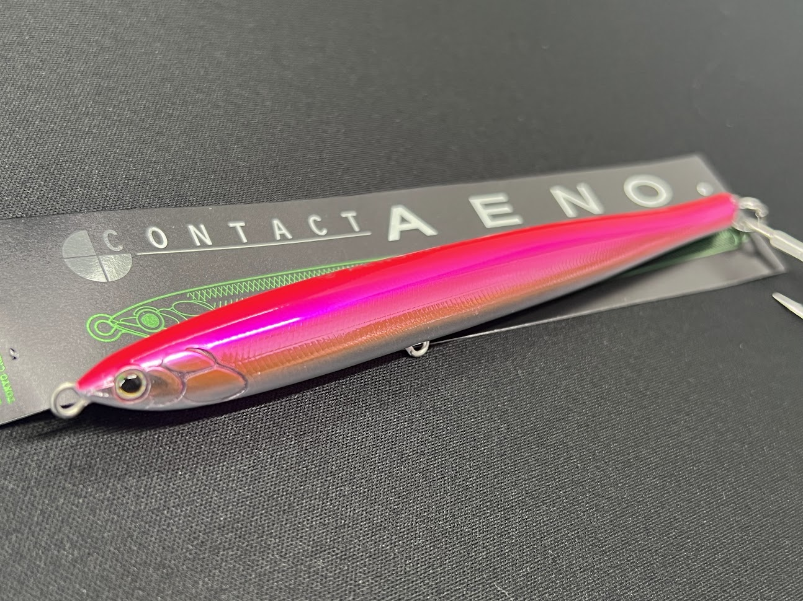
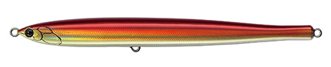
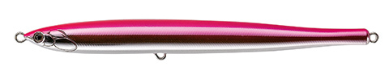
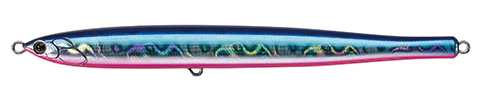
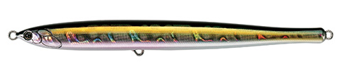

AENO.(イーノ)
荒れた波でも流れの中でもまっすぐ泳ぎ切る安定感。
遠投性と扱いやすさを両立した”攻め続けられる”ジグミノー、それがAENO.

遠投性と扱いやすさを両立した”攻め続けられる”ジグミノー、それがAENO.
- メーカー
- TACLE HOUSE
（タックルハウス） - 長さ
- 130mm
- 重さ
- 30g
- タイプ
- ジグミノー
- アクション
- ローリング＋テールスイング
- ターゲット
魚種 - サクラマス、サワラ、青物
- 発売年度
- 2010年
イーノの特徴・コンセプト
AENO.はタックルハウスから発売されている海アメ・サクラマス用のジグミノーです。 ジグ並の飛距離とミノーライクなアクションを両立。
-
ナローティアドロップ形状のボディ
複雑な潮の流れや波、渦等のなかでも引き抵抗は最低限。固定低重心設計により浮き上がりを抑え、アクションはロールを伴うテールスイング。
- 着水直後から素早いレスポンスで、高速リトリーブまで対応。
イーノの使い方・得意な状況
サーフや河口：スリムなジグミノー形状と固定ウェイトによる遠投性能を活かし、サーフや広い河口をテンポよく探るのに向いています。 流れのあるフィールド：波や潮のヨレがあるポイントでも安定した泳ぎを保つため、潮が速かったり渦ができるような場所でも使いやすいです。 高速リトリーブ：着水後素早くアクションが立ち上がる設計なので、速巻きによる誘いが可能。リアクション的な使い方にも対応します。 バイトの取りやすさ：中央のオフセットアイを使うことで、バイトが集中しがちなミドル～前方へのアタリもフックでしっかり捉えることができます。
ワンポイント
2025年にサワラが釣れるとしてSNSで人気になりました。
人気カラー

レッドゴールド
マズメはこれ一択。

ピンク
青物には強いピンクカラー！

ブルピン
青物狙いの定番カラー

ウィークブラウン
サクラマス必釣カラー。ホログラムがハイアピール
画像出典:TACLEHOUSE
実釣インプレッション
キャストフィールはジグ並で、かなり遠投が効くため、サーフでの使用にも適しています。 フックはテールフックのみが標準仕様出るが、フックを2個つけても動きを損なうことはありません。 ゆらゆら手元に伝わるアクションは使っていてわかりやすく、沈めては巻いての繰り返しでサワラを誘えます。
似ているルアー
- スーパーウルム
- カタクチジョニー125s